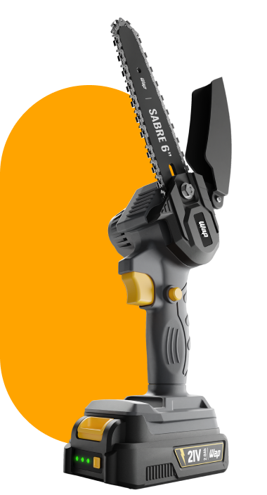
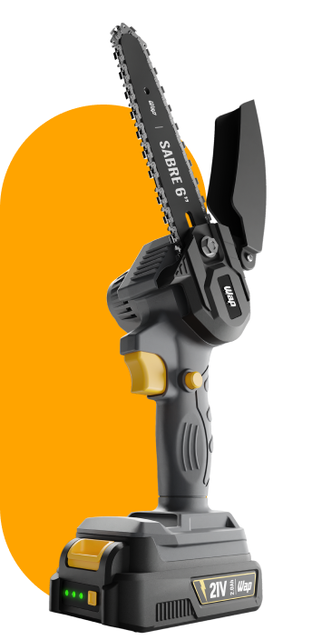
Motosserra de Sabre
6” WAP K21 S01
Descubra o segredo para um jardim sempre bonito
O trabalho de poda, corte de galhos, lenha e tábuas acaba de ficar mais rápido, eficaz, prático e fácil. Seu design compacto e leve renova os projetos para um jardim sempre saudável e belo.
Leve e compacta
Proporciona uma experiência confortável do início ao fim das tarefas.

Sabre de 6''
O tamanho ideal para cortar árvores de jardim, pomares e lenha.
Proteção total
Design pensado para oferecer desempenho e segurança em uma ampla gama de projetos.
Simplifique as
tarefas de jardinagem
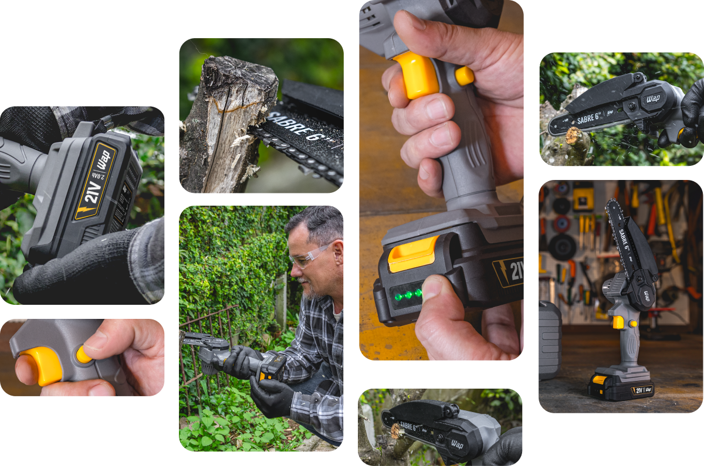
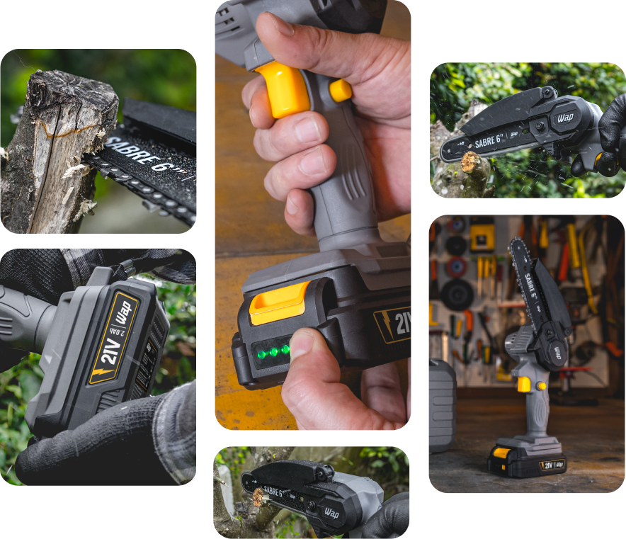
Confiança e segurança para
vencer desafios com precisão
A manutenção de jardins, corte de galhos e troncos de árvores exige uma ferramenta à altura. Além de potente e ergonômica, a motosserra à bateria WAP oferece máxima segurança durante as atividades de jardinagem.
Indicada para projetos externos, a ferramenta possui uma capa protetora que reduz a área de contato da serra e evita estilhaços. Enquanto a trava de segurança, quando acionada, evitar que a motosserra ligue acidentalmente, garantindo sua segurança.
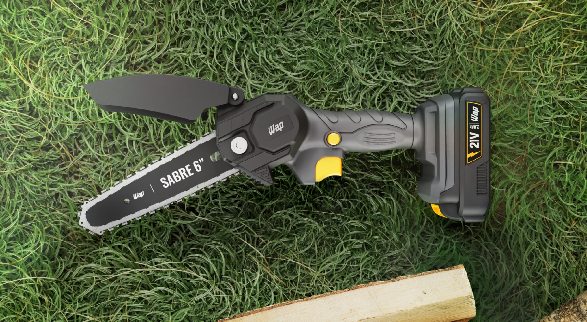
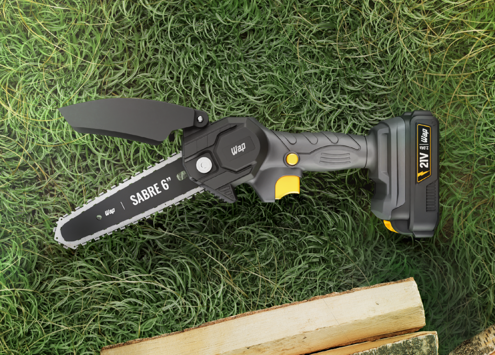
Realize podas e cortes precisos de pequenos galhos, lenha, tábuas. Evite danos desnecessários ao tecido vegetal com uma parceira eficiente e mantenha seu jardim em dia e saudável.
Compatível com toda linha 21V, a bateria 2.0Ah é intercambiável e oferece longa duração, proporcionando mais flexibilidade durante o uso.
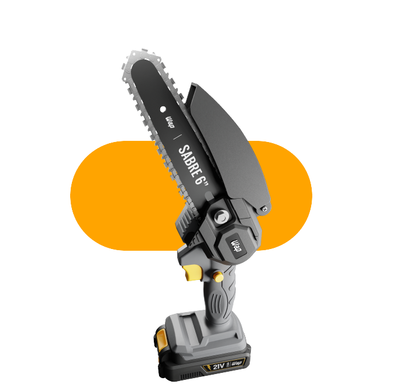
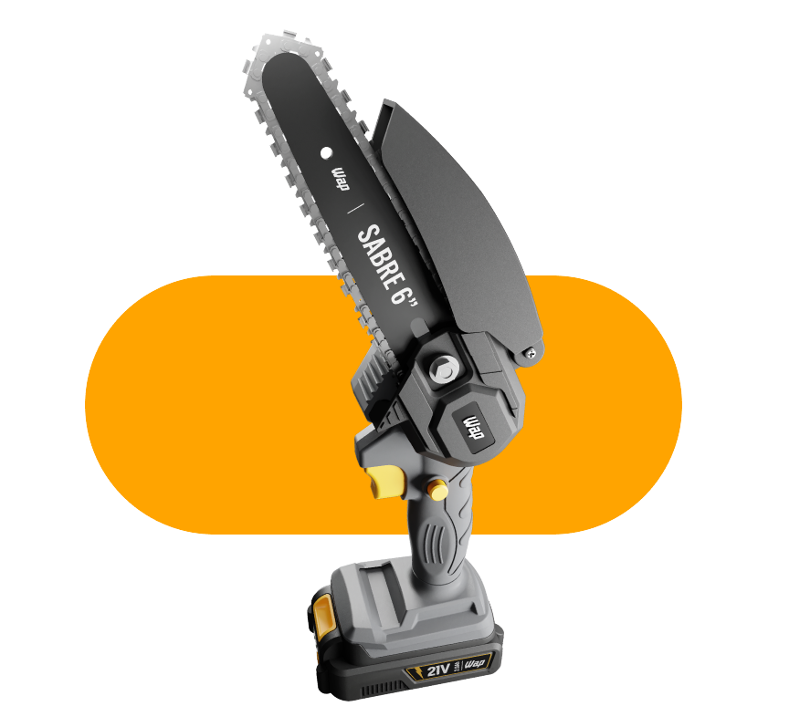
O botão na empunhadura só permite ligar a ferramenta quando estiver acionado, o que garante proteção sem comprometer a eficiência.
Design pensado para oferecer alto desempenho em uma ampla gama de projetos.
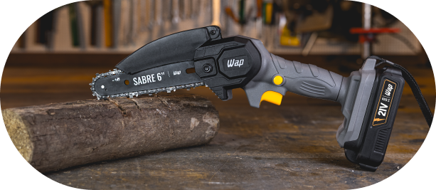
Precisão e controle do
início ao fim das tarefas
Desenvolvida para o uso doméstico, a bateria de Li-Íon oferece até 20 minutos de uso contínuo para sua rotina de trabalho ser eficiente. Sem risco de vício ou efeito memória, a Bateria K21 BT02 é intercambiável e compatível com toda linha 21V WAP.
O indicador de bateria mantém você no controle do tempo de utilização, garantindo que você sempre tenha carga suficiente para completar seus projetos com máxima produtividade e segurança.
-
 O filtro com engate rápido facilita a conexão da lavadora com a mangueira de jardim no bocal de água em um instante.
O filtro com engate rápido facilita a conexão da lavadora com a mangueira de jardim no bocal de água em um instante.
IDEAL PARA CORTES EM
jardim
Pronto para
transformar seu jardim
A Motosserra de Sabre 6" WAP K21 S01 já vem montada; basta conectar a bateria e iniciar seus projetos. Acompanhada por maleta e kit completo de acessórios, está pronta para enfrentar desafios diários de corte com facilidade
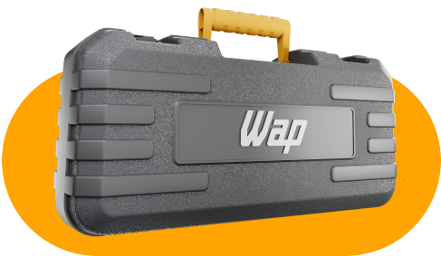
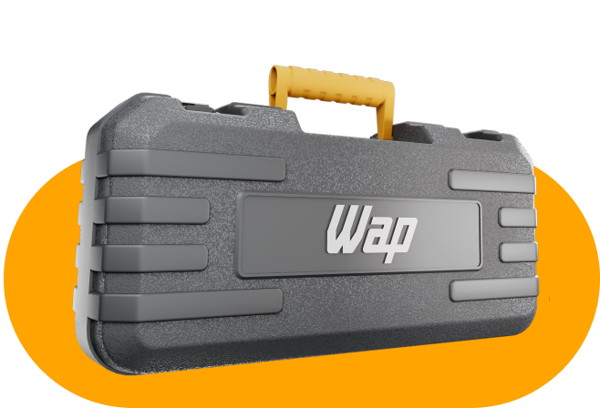